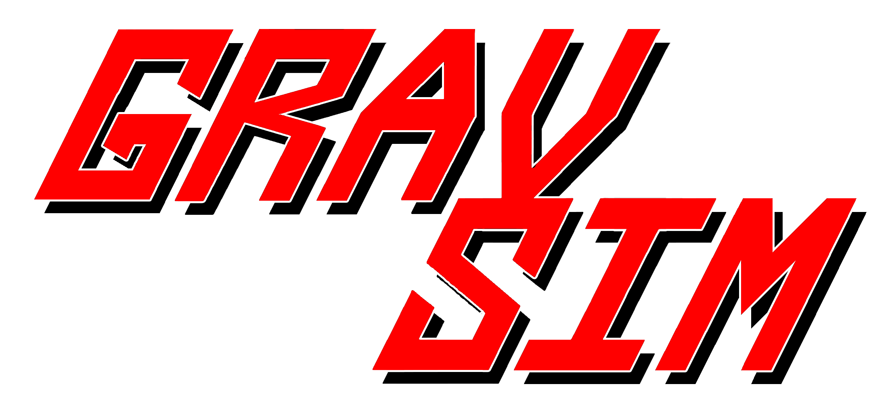

DeltaXor Technologies develops custom software, simulation tools, computational models, and research-driven engineering solutions for problems that demand more than off-the-shelf answers.
View Showcase
A precision Newtonian gravity simulator capable of modeling planets, stars, black holes, spacecraft, orbital mechanics, collisions, and long-duration simulations using fourth-order Runge-Kutta integration.
Learn More